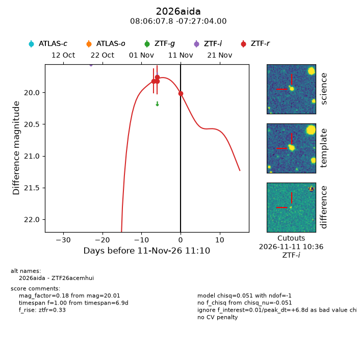
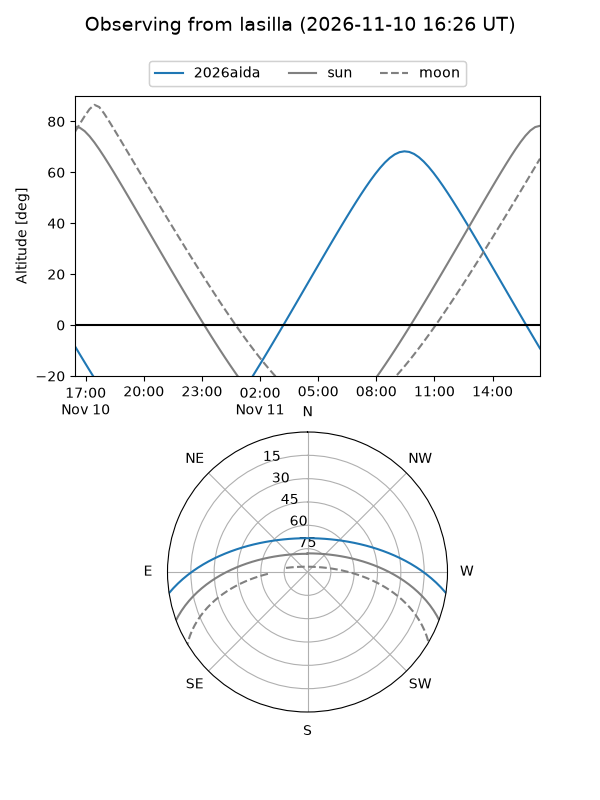
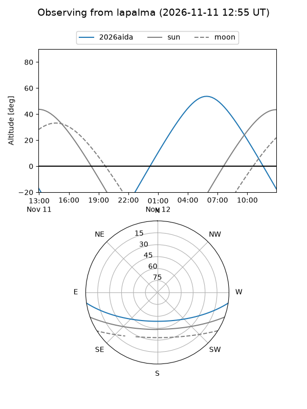
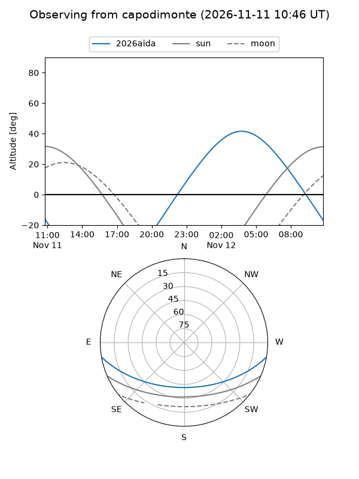
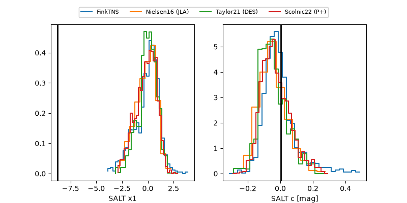

2026aida
Target 2026aida at 2026-11-11 11:12
Aliases and brokers:
FINK-ZTF: ztf.fink-portal.org/ZTF26acemhui
Lasair-ZTF: lasair-ztf.lsst.ac.uk/objects/ZTF26acemhui
ALeRCE-ZTF: alerce.online/object/ZTF26acemhui
YSE-PZ: ziggy.ucolick.org/yse/transient_detail/2026aida
TNS name: wis-tns.org/object/2026aida
Direct TNS query: direct search
alt names
ZTF26acemhui (ztf,fink_ztf)
2026aida (tns,yse)
Coordinates:
equatorial (ra, dec) = 121.5323,-7.45111
equatorial (HMS+DMS) = 08:06:07.76,-07:27:04.00
galactic (l, b) = (228.4128,+12.90906)
Flags:
peak dt: +6.8
Photometry:
last ztfr=20.01
4 ztfr detections
Lightcurve

Visibility



Additional plots
